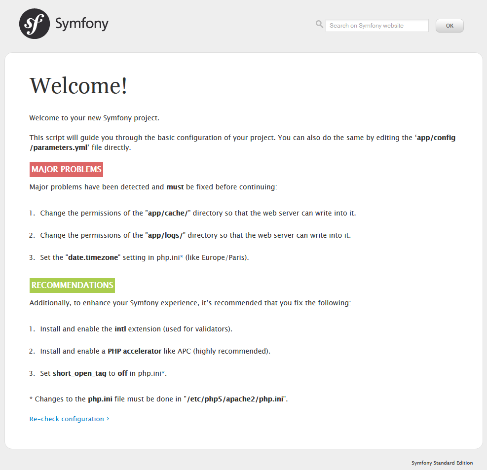

20. Day 1: Starting up the Project¶
- This article is part of the original Jobeet Tutorial, created by Fabien Potencier, for Symfony 1.4.
20.1. What is Jobeet?¶
Jobeet is an Open-Source job board software which provides you day-by-day tutorials, that will help you learn the latest Web Technolgy, Symfony 2.3.2 (for those who don’t know yet, Symfony is a framework for PHP). Each chapter/day is meant to last about one hour, and will be the occasion to learn Symfony by coding a real website, from start to finish. Every day, new features will be added to the application and we’ll take advantage of this development to introduce you to new Symfony functionalities, as well as good practices in Symfony web development. Today, being your first day, you won’t be writing any code. Instead, you will setup a working development environment.
20.2. Setting up the working development environment¶
First of all, you need to check that your computer has a friendly working environment for web development. We will use Ubuntu 12.04 LTS Server installed in a VMware Player virtual machine. At a minimum, you need a web server (Apache, for instance), a database engine (MySQL) and PHP 5.3.3 or later.
- Install Apache, your web server:
$ sudo apt-get install apache2
and enable Apache mod-rewrite:
$ sudo a2enmod rewrite
- Install the MySQL Server:
$ sudo apt-get install mysql-server mysql-client
- Install PHP, the server scripting language
$ sudo apt-get install php5 libapache2-mod-php5 php5-mysql
- Install Intl extension:
$ sudo apt-get install php5-intl
- Now, you need to restart Apache service:
$ sudo service apache2 restart
20.3. Download and install Symfony 2.3.2¶
The first thing to do is to prepare a directory on your web server where you want to install the new project. Let’s call it jobeet: /var/www/jobeet.
$ mkdir /var/www/jobeet
We have a directory prepared, but what to put in it? Go to http://symfony.com/download, choose Symfony Standard 2.3.2 without vendors and download it. Now, unzip the files inside the Symfony directory to your prepared directory, jobeet.
20.3.1. Updating Vendors¶
At this point, you’ve downloaded a fully-functional Symfony project in which you’ll start to develop your own application. A Symfony project depends on a number of external libraries. These are downloaded into the vendor/ directory of your project via a library called Composer. Composer is a dependency management library for PHP, which you can use to download the Symfony 2.3.2 Standard Edition. Start by downloading Composer onto your jobeet directory:
$ curl -s https://getcomposer.org/installer | php
If you don’t have curl extension installed, you can install it using this command:
$ sudo apt-get install curl
Next, type the following command to start downloading all the necessary vendor libraries:
$ php composer.phar install
20.4. Web Server Configuration¶
A good web practice is to put under the web root directory only the files that need to be accessed by a web browser, like stylesheets, JavaScripts and images. By default, it’s recommended to store these files under the web/ sub-directory of a symfony project. To configure Apache for your new project, you will create a virtual host. In order to do that, go to your terminal and type in the next command :
$ sudo nano /etc/apache2/sites-available/jobeet.local
Now, a file named jobeet.local is created. Put the following inside that file, then hit Control – O and Enter to save it, then Control – X to exit the editor. etc/apache2/sites-available/jobeet.local
<VirtualHost *:80>
ServerName jobeet.local
DocumentRoot /var/www/jobeet/web
DirectoryIndex app.php
ErrorLog /var/log/apache2/jobeet-error.log
CustomLog /var/log/apache2/jobeet-access.log combined
<Directory "/var/www/jobeet/web">
AllowOverride All
Allow from All
</Directory>
</VirtualHost>
The domain name jobeet.local used in the Apache configuration has to be declared locally. If you run a Linux system, it has to be done in the /etc/hosts file. If you run Windows, this file is located in the C:WindowsSystem32driversetcdirectory. Add the following line:
127.0.0.1 jobeet.local
Tip
Replace 127.0.0.1 with the ip of your web server machine in case you are working on a remote server.
If you want this to work, you need to enable the newly created virtual host and restart your Apache. So go to your terminal and type:
$ sudo a2ensite jobeet.local
$ sudo service apache2 restart
Symfony comes with a visual server configuration tester to help make sure your Web server and PHP are correctly configured to use Symfony. Use the following URL to check your configuration: http://jobeet.local/config.php
If you don’t run this from your localhost, you should locate and open web/config.php file and comment the lines that restrict the access outside localhost:
web/config.php
if (!isset($_SERVER['HTTP_HOST'])) {
exit('This script cannot be run from the CLI. Run it from a browser.');
}
/*
if (!in_array(@$_SERVER['REMOTE_ADDR'], array(
'127.0.0.1',
'::1',
))) {
header('HTTP/1.0 403 Forbidden');
exit('This script is only accessible from localhost.');
}
*/
// ...
Do the same for web/app_dev.php: web/app_dev.php
use Symfony\Component\HttpFoundation\Request;
use Symfony\Component\Debug\Debug;
// If you don't want to setup permissions the proper way, just uncomment the following PHP line
// read http://symfony.com/doc/current/book/installation.html#configuration-and-setup for more information
//umask(0000);
// This check prevents access to debug front controllers that are deployed by accident to production servers.
// Feel free to remove this, extend it, or make something more sophisticated.
/*
if (isset($_SERVER['HTTP_CLIENT_IP'])
|| isset($_SERVER['HTTP_X_FORWARDED_FOR'])
|| !in_array(@$_SERVER['REMOTE_ADDR'], array('127.0.0.1', 'fe80::1', '::1'))
) {
header('HTTP/1.0 403 Forbidden');
exit('You are not allowed to access this file. Check '.basename(__FILE__).' for more information.');
}
*/
$loader = require_once __DIR__.'/../app/bootstrap.php.cache';
Debug::enable();
require_once __DIR__.'/../app/AppKernel.php';
// ...
Probably, you will get all kind of requirements when you go to config.php. Below, is a list of things to do for not getting all those “warnings”. 1. Change the permissions of app/cache and app/logs:
sudo chmod -R 777 app/cache
sudo chmod -R 777 app/logs
sudo setfacl -dR -m u::rwX app/cache app/logs
Install ACL if you don’t have it yet:
sudo apt-get install acl
2. Set the date.timezone setting in php.ini etc/php5/apache2/php.ini
date.timezone = Europe/Bucharest
sudo nano /etc/php5/apache2/php.ini
Find the date.timezone setting for [date] section and set it to your timezone. After that, erase “;”, placed at the beginning of the line. 3. Set the short_open_tag setting to off in the same php.ini file etc/php5/apache2/php.ini
- Install and enable a PHP Accelerator (APC recommended)
sudo apt-get install php-apc
sudo service apache2 restart
After restarting Apache, open a browser window and type in http://jobeet.local/app_dev.php. You should see the following page:

20.5. Symfony2 Console¶
Symfony2 comes with the console component tool that you will use for different tasks. To see a list of things it can do for you type at the command prompt:
$ php app/console list
20.6. Creating the Application Bundle¶
20.6.1. What exactly is a bundle?¶
Is similar to a plugin in other software, but even better. The key difference is that everything is a bundle in Symfony 2.3.2, including both core framework functionality and the code written for your application. A bundle is a structured set of files within a directory that implement a single feature. Tips: A bundle can live anywhere as long as it can be autoloaded (app/autoload.php).
Note
You can read more here: http://symfony.com/doc/current/book/page_creation.html#the-bundle-system – The Bundle System.
20.6.2. Creating a basic bundle skeleton¶
Run the following command to start the Symfony’s bundle generator:
$ php app/console generate:bundle --namespace=Ibw/JobeetBundle
The generator will ask you some questions before generating the bundle. Here are the questions and answers (all, except one, are the default answers):
Bundle name [IbwJobeetBundle]: IbwJobeetBundle
Target directory [/var/www/jobeet/src]: /var/www/jobeet/src
Configuration format (yml, xml, php, or annotation) [yml]: yml
Do you want to generate the whole directory structure [no]? yes
Do you confirm generation [yes]? yes
Confirm automatic update of your Kernel [yes]? yes
Confirm automatic update of the Routing [yes]? yes
Clear the cache after generating the new bundle with:
$ php app/console cache:clear --env=prod
$ php app/console cache:clear --env=dev
The new Jobeet bundle can be now found in the src directory of your project: src/Ibw/JobeetBundle. The bundle generator made a DefaultController with an index action. You can access this in your browser: http://jobeet.local/hello/jobeet or http://jobeet.local/app_dev.php/hello/jobeet.
20.6.3. How to remove the AcmeDemoBundle¶
The Symfony 2.3.2 Standard Edition comes with a complete demo that lives inside a bundle called AcmeDemoBundle. It is a great boilerplate to refer to while starting a project, but you’ll probably want to eventually remove it.
- Type the command to delete Acme directory:
$ rm -rf /var/www/jobeet/src/Acme
2. Go to: /var/www/jobeet/app/AppKernel.php and delete: app/AppKernel.php
// ...
$bundles[] = new Acme\DemoBundle\AcmeDemoBundle();
// ...
and now delete from app/config/routing_dev.yml: app/config/routing_dev.yml
# ...
# AcmeDemoBundle routes (to be removed)
_acme_demo:
resource: "@AcmeDemoBundle/Resources/config/routing.yml"
- Finally, clear the cache.
20.7. The Environments¶
Symfony 2.3.2 has different environments. If you look in the project’s web directory, you will see two php files: app.php and app_dev.php. These files are called front controllers; all requests to the application are made through them. The app.php file is for production environment and app_dev.php is used by web developers when they work on the application in the development environment. The development environment will prove very handy because it will show you all the errors and warnings and the Web Debug Toolbar – the developer’s best friend. That’s all for today. See you on the next day of this tutorial, when we will talk about what exactly the Jobeet website will be about!
Note

This work is licensed under a Creative Commons Attribution-ShareAlike 3.0 Unported License. original symfony2 jobeet article is here http://www.intelligentbee.com/blog/tag/symfony2-jobeet/.